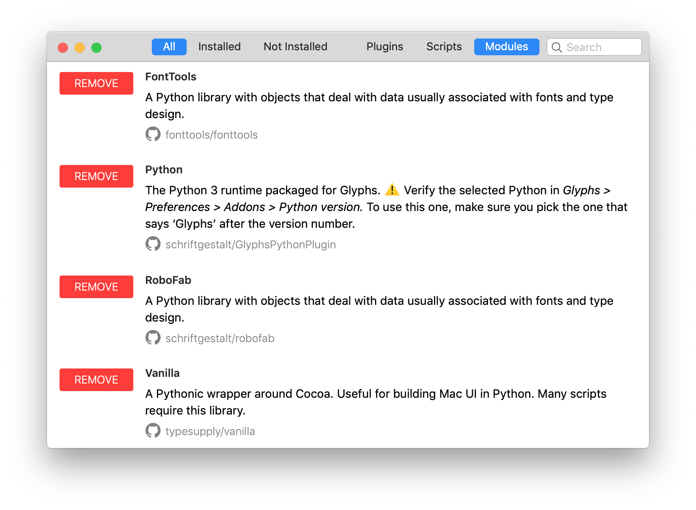
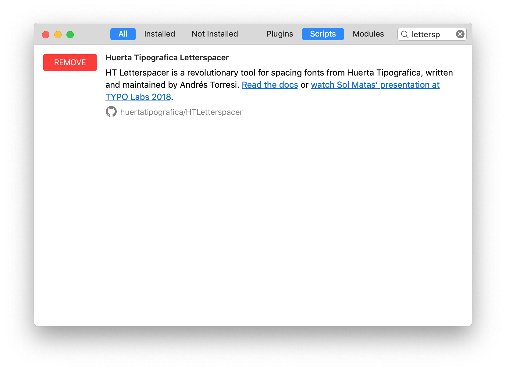
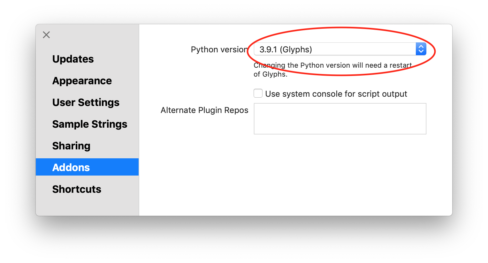
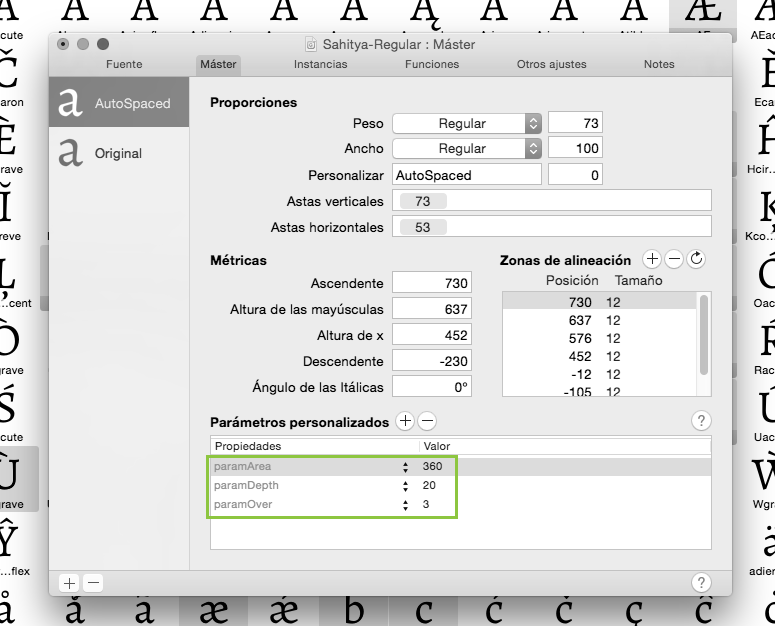

An amazing tool to have a well-done spacing in every step of a font project.Eduardo Tunni
It was very useful for defining Henderson. We made different spacings very quickly to decide the best one.Alejandro Paul
It is very easy to make different spacing tests and save a lot of time when you start a project.Pablo Impallari
Concepts
A method, not a magic button.
HT Letterspacer is a tool for spacing fonts that works on finished fonts as well as during development. The first public version works as a macro for Glyphs, but the method is adaptable to any editor or programming language.
With HT Letterspacer, achieving consistent spacing is easy because you can define fixed parameters during your type design process and focus on the letterform drawing.
By simplifying the spacing of a font, you can try different options quickly without going mad.
At present, HT Letterspacer doesn't kern — it is only for setting glyph widths and sidebearings.
So it replaces the type designer's craft?
No. You have to configure and use it in what you think is the best way. You still need to know what you are doing. The default configuration will produce a reasonable result for a beginner, but it does not replace the eye of a master type designer. To achieve excellent spacing, you need to carefully configure and use the script. But achieving good results will be easier and faster.
What are the ideas behind it?
HT Letterspacer is a method for defining sidebearings based on the amount of white space or area in a glyph box, and it defines a way to measure it using three parameters per master. The parameters are set up for lowercase letters and modified by a configuration template for different groups of letters (using the glyph categories in Glyphs). There is a script version with a window where you can apply specific parameters to selected glyphs.
You can use the script based on a template where each category of glyphs has a number that changes the area parameter proportionally, or work by applying specific parameters manually to different groups of glyphs, on the fly. The more you put your eye and hand into the process, the more accurate the results.
It works with large families and many masters. If you've changed your mind late in the process, redesigning the spacing scheme of the entire typeface family is easy.
HT Letterspacer is a tool for type designers. There are no magic parameters, and each designer can run their own experiments to achieve different results.
Project history
Andrés Torresi is the initial and primary author of this tool. Soon after joining the postgraduate course in typeface design in Buenos Aires in 2009, he began research to find a simple, semi-automated method to set glyph sidebearings that could work at any moment during a project and that the type designer can control.
Today HT Letterspacer is the result of this research, and has been thoroughly tested by Andrés and Juan Pablo del Peral at the HT Fonts foundry, as well as by other designers on Latin, Greek, Cyrillic and Devanagari designs.
At ATypI 2015 in São Paulo, Andrés approached Dave Crossland to discuss ways of funding the project to make it available under the GPLv3 licence. The tool was used and tested privately by the Google Fonts team and finally released for free at ATypI 2016, with sources at github.com/huertatipografica/HTLetterspacer.
We want to thank Google for making it possible to open this up to the community.
Usage
Install & configure.
A short installation per Glyphs version, then a couple of files to set up.
How do I install HT Letterspacer?
- Open Glyphs Preferences, navigate to Addons / Modules and press Install Modules.
- Go to Script / Open Scripts folder and close Glyphs.
- Download the latest version of HTLetterspacer and put the
HTLetterspacerfolder inside the Scripts folder. - Open Glyphs — the scripts appear under Scripts / HTLetterspacer.
- Open Window / Plugin Manager.
- In the Modules section, install Python, FontTools, RoboFab and Vanilla.

- In the Scripts section, install Letterspacer.

- Restart Glyphs.
- Open Preferences and select Glyphs in Addons / Python version.

- Use the scripts by navigating to Scripts / HT Letterspacer.
What do I need to set up to use it?
- Declare custom parameters on each master of your Glyphs file, or a general default one in the script
code. The parameters are
paramArea,paramDepthandparamOver. - A configuration file in the same folder as your Glyphs file, named like
yourfontname_autospace.py, with all the glyph categories, their area values and a reference glyph to define the vertical range over which the group will be measured. - To create a proof glyph called
_areaswith the measured outlines when used on a single glyph, setdrawAreas = Truein the script. - To work with fixed-width fonts by blocking the advance width, set
self.engine.tabVersion = Truein the script. - To use it differently at different times, duplicate the script with different configurations and change the menu name at the beginning. We recommend assigning keyboard shortcuts in macOS to each variation.
Parameters
Parameters are declared in the master custom parameters box, in the font info, for each of the masters where you want to store the values.

You can tune the parameters with the HT Letterspacer UI and press Copy Parameters. After that, paste the custom parameters into the active master: Font Info / Masters.
If the master doesn't have the appropriate custom parameters, or the parameter name differs from what is required, the script will use the default values from the source code.
paramArea · area between letters
The paramArea parameter lets you define how much area (measured in thousands of units)
you want between the lowercase letters inside the x-height. A font suitable for text at 1000 UPM
typically uses a value between 200 and 400.
paramDepth · depth into open counters
The paramDepth parameter (measured relatively as a % of x-height) lets you define how
deep into open counterforms you want to measure the space, from the extreme points of each glyph to
its centre. This parameter affects rounded or open shapes.
A triangle with x-height (a circle, a c-shape or a T) has a long distance and a large amount of white from its extreme points or sides to the centre of the letter. Our eyes don't pay attention to the whole area, so the program doesn't either. You decide how much of this "big white" to measure by setting up this parameter.
Depending on the design, this value moves between 10 and 25 (per cent of x-height).
paramOver · vertical overshoot
The paramOver parameter expands the vertical range over which you measure the space,
above and below the shape, by a certain % of x-height. It lets you make slight differences when a sign
has outlines that exceed the height of its group of letters, typically ascenders or descenders.
For example, in a sans-serif font, a dotless /i/ and /l/ could have exactly the same shape between the baseline and the x-height. Setting an overshoot expands the range up and down and produces a different calculation of space for each sign. In this case, the sign with ascenders (the /l/) ends up with looser spacing.
This parameter is optional and depends on what you want to do with it, but it is intended to be used similarly to an overshoot.
Configuration file
Glyphs has changed the way it classifies characters. Config files generated in Glyphs 2 will produce inconsistent results in Glyphs 3.
If you've updated to Glyphs 3, delete the old config files and let the script regenerate new ones from scratch.
A text file in the same folder as the Glyphs file defines all the different alterations for each
category of signs, as well as a reference sign that defines the height or vertical range of the sign
group. For example, lowercase with x, uppercase with X or H,
small caps with x.sc, numbers with one, and so on.
Each line of the configuration file contains a set of rules to apply to a group of glyphs. Lines should be ordered from general to specific rules. Each field on the line should be separated by a comma, with a trailing comma:
Script, Category, Subcategory, value, reference glyph, name filter,| Item | Description |
|---|---|
| Script | The name of the script type. Asterisk * means all. |
| Category | The name of the Glyphs category. For lowercase glyphs, it is Letter. |
| Subcategory | The name of the Glyphs subcategory. For lowercase glyphs, it is Lowercase. |
| Value | The coefficient that changes the area parameter in each category or rule. If you set a paramArea of 400 and this value is equal to 2, the area applied is 800. In this version of the script, only the area parameter is altered by this number. |
| Reference | The name of the glyph that defines the vertical range over which spacing will be measured. For
lowercase we use x, but you can use any other glyph with the same height, lower and
higher points. |
| Filter | You can filter the rules by any suffix or part of the glyph name. * means
all. For example, to constrain a rule to ordinal glyphs, write ord.
|
A simple example of the first four lines of a config file:
*,Letter,Uppercase,1.5,H,*,
*,Letter,Smallcaps,1.25,h.sc,*,
*,Letter,Lowercase,1,x,*,
*,Letter,Superscript,0.7,ordfeminine,*,A default config file is provided to make the process easier. You
must rename it so it has the same name as your font plus the _autospace suffix — e.g.
myserif.glyphs → myserif_autospace.py.
Activate or deactivate lines by writing a hash # at the beginning of the line, just as in
Python. Each line must contain the six values separated by commas.
Examples
See it in action.
You can download our example source files from our GitHub repository.
The Telder family's spacing was done around 98% with the tool, plus a small 2% of post-adjustment. The family was drawn in parallel with the development of the tool.
Open source
Made with the community, for the community.
We want this tool to be open and free, to receive feedback and improvements from other designers. Star it, fork it, send a pull request — or chip in to keep it going.